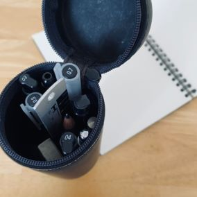
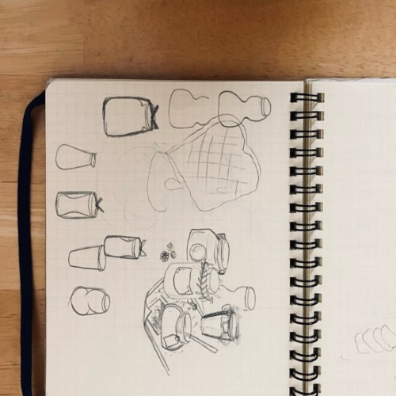
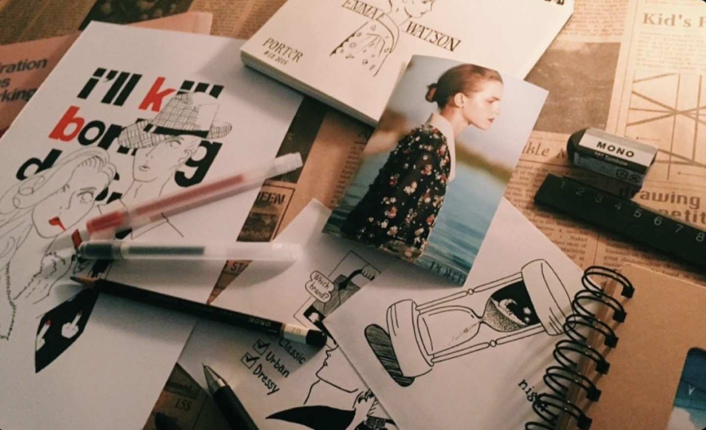
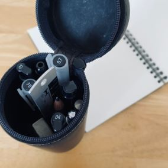
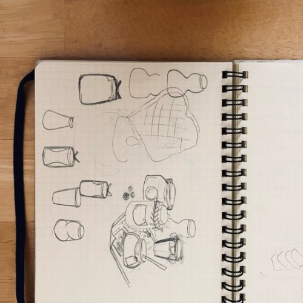
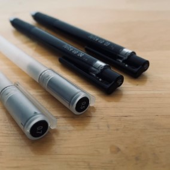
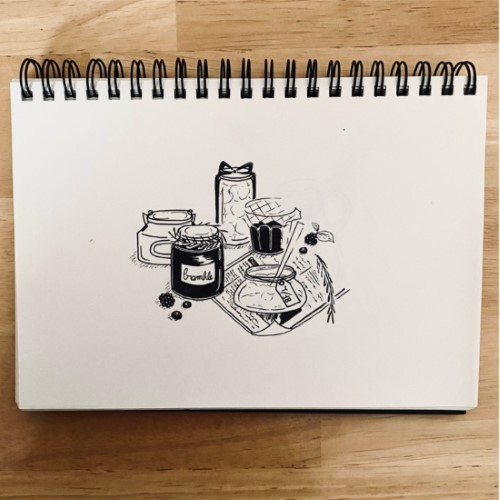

ノートに絵のイメージを描きます。
イメージができたら下描きをします。




1999年大阪府生まれ。
高校生の頃からイラストを描き始める。
用いる画材は基本的にボールペンと紙のみ。
白と黒のコントラスト、均整のとれた線を手描きで表現する。
2017年2月 グループ展 参加
2018年2月 グループ展 参加
2018年3月 飲食店 ボード、POP制作
2020年3月 飲食店 ボード、POP制作
ノートに絵のイメージを描きます。
イメージができたら下描きをします。



0.3～0.7mmの太さのゲルインキ
ボールペンを使い分けます。
